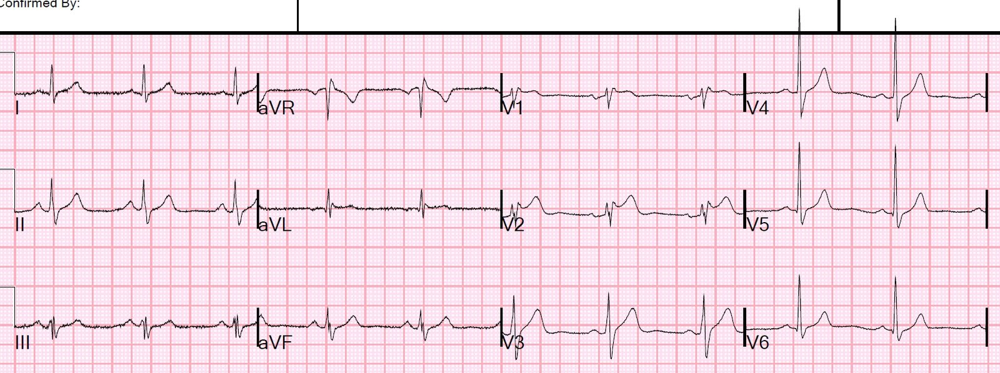
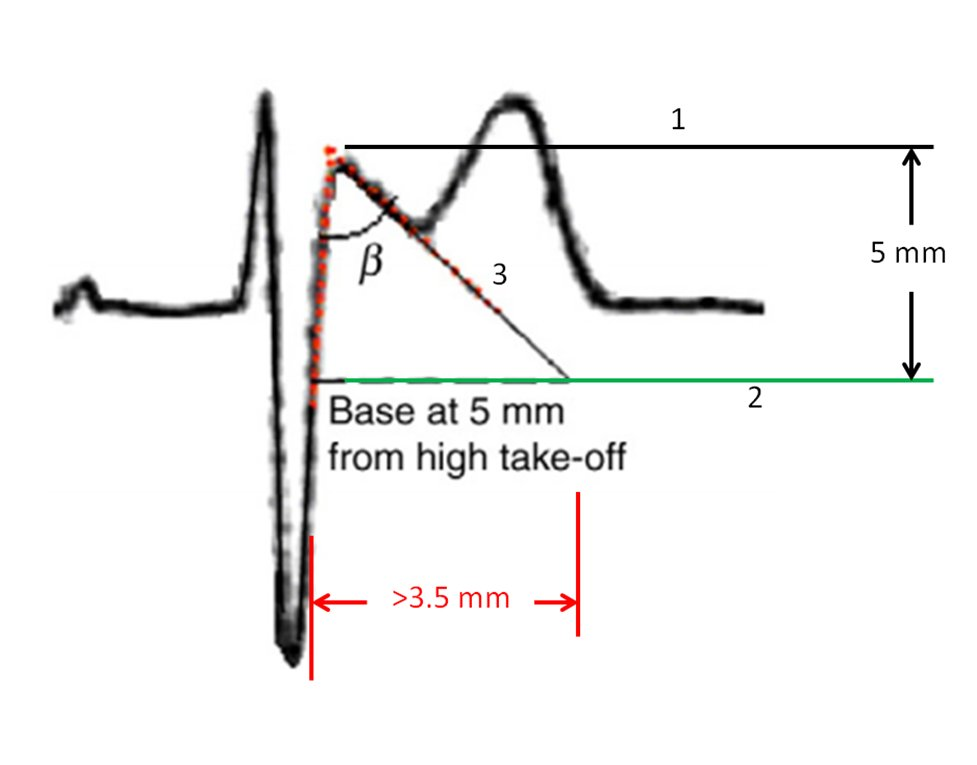
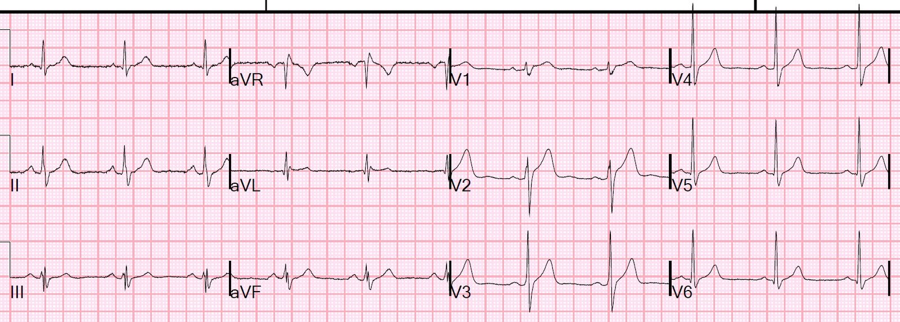
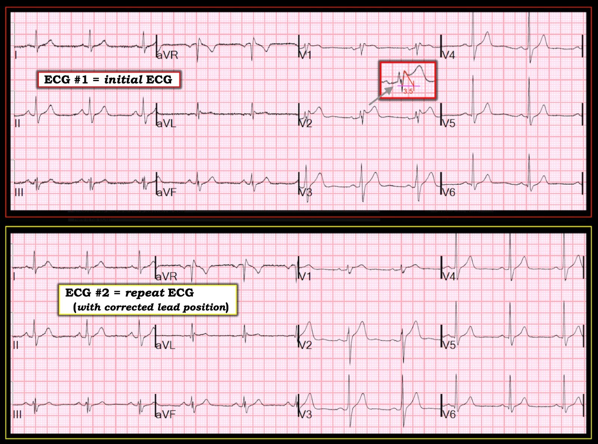

28/11/2018 — ST chênh lên hình yên ngựa. Có phải STEMI? Có phải Brugada típ II?
Bản dịch tiếng Việt của bài "Saddleback ST Elevation. Is it STEMI? Is it type II Brugada?" – Dr. Smith’s ECG Blog. Giữ nguyên toàn bộ 5 hình ảnh của bản gốc.
Một bệnh nhân 50 mấy tuổi đến khám vì đau thượng vị và đau ngực.
Đây là điện tâm đồ của bệnh nhân:


Kết quả đọc bằng máy tính:
NHỊP XOANG
BLỐC NHÁNH PHẢI KHÔNG HOÀN TOÀN
ST CHÊNH LÊN, CÂN NHẮC TỔN THƯƠNG VÁCH
***NHỒI MÁU CƠ TIM CẤP***
Có hình yên ngựa (saddleback), là hình ảnh hiếm khi do nhồi máu cơ tim. V2 có hình thái của Brugada típ II, vì có góc beta tương đối lớn, như được mô tả ở đây:


1. Kẻ một đường nằm ngang từ đỉnh sóng r’ (đường đen 1)
2. Kẻ một đường nằm ngang thấp hơn đường này 5 mm (đường xanh lá 2)
3. Kéo dài đoạn r’-ST dốc xuống (đường đen 3) cho đến khi cắt đường xanh lá
4. Đo đáy.
Nếu lớn hơn 3,5 mm thì đạt tiêu chuẩn (điều này tương đương với góc beta 35 độ)
Tuy nhiên, bất cứ khi nào bạn thấy rSR’, nhất là khi kèm hình yên ngựa, hãy nghĩ đến vị trí đặt điện cực.
Sau đó hãy nhìn sóng P ở V2. Nó có dương hoàn toàn không? Nếu không, nhiều khả năng điện cực V2 đã được đặt quá cao.
Tôi đã quay lại kiểm tra và quả thật V1 và V2 đã được đặt quá cao.
Tôi đặt lại chúng vào đúng vị trí và chúng tôi ghi một điện tâm đồ khác:


QTc 384
Bạn có thể dùng Công thức LAD–Tái cực sớm (LAD-Early Repol Formula) để phân biệt hình ảnh này với tắc LAD:
ST chênh lên tại thời điểm 60 ms sau điểm J, so với điểm nối PQ (STE60V3), = 2,5mm
QTc do máy tính đo = 384
Biên độ sóng R ở V4 (RAV4) = 19mm
Tổng biên độ QRS ở V2 (QRSV2) = 17,5mm
Bất kỳ công cụ tính nào sau đây cũng dùng được:
Dùng ứng dụng trên iPhone: SubtleSTEMI
Dùng ứng dụng trên Android: ECG SMITH
Dùng đường link ở đầu trang blog.
Dùng MDcalc.com: https://www.mdcalc.com/subtle-anterior-stemi-calculator-4-variable (công cụ tính STEMI thành trước kín đáo, 4 biến)
Công thức 4 biến: 15,1 (Giá trị nhỏ hơn 18,2 nghiêng về tái cực sớm. Giá trị này rất thấp.)
Bệnh nhân được chẩn đoán trào ngược (reflux)
Những điểm cần học:
1. ST chênh lên hình yên ngựa hầu như không bao giờ là STEMI
2. STE hình yên ngựa có thể là hội chứng Brugada típ II
3. Hình ảnh giả típ II có thể do điện cực V1 và V2 được đặt quá cao
4. Sóng P đảo ngược ở chuyển đạo V2 gợi ý điện cực bị đặt sai vị trí, quá cao
Hình yên ngựa trong STEMI:
Đây là 2 điện tâm đồ duy nhất có “hình yên ngựa” ở V2 mà tôi từng thấy thực sự là tắc LAD:
Anatomy of a Missed LAD Occlusion (classified as a NonSTEMI) (Phân tích một ca tắc LAD bị bỏ sót — được xếp loại NonSTEMI)
A Very Subtle LAD Occlusion….T-wave in V1?? (Một ca tắc LAD rất kín đáo… sóng T ở V1??)
Dưới đây là các ca STE hình yên ngựa khác:
Is this Saddleback a STEMI?? (Hình yên ngựa này có phải STEMI không??)
Epigastric pain, Syncope, and Saddleback ST Elevation (Đau thượng vị, ngất và ST chênh lên hình yên ngựa)
A 65 Year Old Man with Chest pain and Precordial ST Elevation (Nam 65 tuổi đau ngực và ST chênh lên ở các chuyển đạo trước tim)
Non-Vagal Syncope and Saddleback Morphology in V2 (Ngất không do phản xạ phế vị và hình thái yên ngựa ở V2)
Is this STEMI? Pattern Recognition is Key (Đây có phải STEMI? Nhận diện hình ảnh là mấu chốt)

===================================
BÌNH LUẬN CỦA TÔI, bởi KEN GRAUER, MD (28/11/2018):
===================================
Một ca tuyệt vời để minh họa nhiều khái niệm quan trọng — dù nó đặt ra một loạt câu hỏi chưa có lời giải đáp chắc chắn. Để cho rõ — tôi ghép cả hai bản ghi vào Hình 1. Nhằm khơi gợi thảo luận — tôi sẽ đóng vai “người phản biện” (Devil’s Advocate) trong các bình luận dưới đây:


==========================
Điện tâm đồ #1: ( = Bản ghi ban đầu):
Mối lo ban đầu vào lúc ghi điện tâm đồ #1 là liệu ST chênh lên ở chuyển đạo V1 và V2 có chỉ điểm OMI cấp hay không. Hóa ra — điện cực V1 và V2 đã bị đặt quá cao trên ngực, nên điện tâm đồ #1 không phải là bản ghi hợp lệ cho việc đánh giá như vậy. Dù vậy — tôi nghĩ cũng đáng nêu rõ lý do vì sao, ngay cả khi điện cực được đặt đúng, OMI cấp vẫn khó có khả năng xảy ra nếu dựa trên điện tâm đồ ban đầu này:
- Hình dạng ST chênh lên ở chuyển đạo V1 và V2 trong điện tâm đồ #1 là dạng lõm (concave up), thường là một hình thái lành tính. Theo Dr. Smith — cấu hình “yên ngựa” (thấy rõ nhất ở đây tại chuyển đạo V2) hiếm khi do nhồi máu cơ tim cấp.
- Ngoài chuyển đạo V1 và V2 — thực sự không có độ lệch đoạn ST bất thường nào. ST chênh lên nhẹ ở chuyển đạo V3 không vượt quá mức 1-2 mm ST chênh lên dạng lõm thường gặp ở chuyển đạo V2 và/hoặc V3 trong các biến thể tái cực bình thường. Không có chuyển đạo nào khác có ST chênh lên. Không có ST chênh xuống soi gương. Vì vậy, ngay cả khi mọi điện cực đều được đặt đúng ở điện tâm đồ #1 — tôi cũng sẽ không nghi ngờ OMI cấp.
==========================
Đánh giá hình ảnh Brugada-2 trên điện tâm đồ:
Hình ảnh điện tâm đồ “yên ngựa” (tức Brugada típ 2) được đánh giá bằng cách áp dụng các tiêu chuẩn trong Hình mà Dr. Smith đã giải thích ở trên. Tôi minh họa cách áp dụng các phép đo này trong ô phóng to phức bộ ở giữa tại chuyển đạo V2.
- Ở điện tâm đồ #1 — đáy của tam giác (đường HỒNG nằm ngang) tạo bởi các đường kẻ từ đỉnh r’ ở chuyển đạo V2 trông cực kỳ gần 3,5 mm, tức là ngay tại giới hạn trên để đạt tiêu chuẩn hình ảnh Brugada típ 2.
- Tiêu chuẩn của hình ảnh Brugada típ 2 trên điện tâm đồ đã biến mất khi điện cực V1 và V2 được đặt đúng vị trí (Xem điện tâm đồ #2 trong Hình 1). Dù việc hình yên ngựa ở chuyển đạo V2 biến mất sau khi đặt lại điện cực V1, V2 là điều đáng yên tâm — cần hiểu rằng ở một số bệnh nhân có hình ảnh Brugada, bất thường trên điện tâm đồ có thể chỉ thấy được khi đặt điện cực cao hơn thường lệ (tức là ở khoang liên sườn 2 hoặc 3). Đó là vì hoạt động điện bất thường dẫn đến hình ảnh Brugada trên điện tâm đồ xuất phát từ một vùng rất hạn chế nằm ở RVOT (đường ra thất phải) — và ở một số bệnh nhân, vùng điện học này đòi hỏi đặt điện cực cao hơn mới phát hiện được. Điều này đặt ra câu hỏi lâm sàng khó trả lời là khi nào nên ghi thêm điện tâm đồ cho bệnh nhân với điện cực V1,V2 đặt ở khoang liên sườn 2 và/hoặc 3?
- Khi đi kèm các đặc điểm lâm sàng phù hợp (tức là tiền sử bản thân ngừng tim, VT đa dạng, ngất không do phản xạ phế vị, tiền sử gia đình có người đột tử khi còn trẻ, v.v.) — thì sự xuất hiện tự phát của hình ảnh Brugada típ 1 trên điện tâm đồ có giá trị chẩn đoán hội chứng Brugada. Mặt khác — sự xuất hiện đơn độc của hình ảnh Brugada típ 2 thì không có giá trị chẩn đoán, dù khi đi kèm các đặc điểm khác, nó có thể làm tăng nghi ngờ lâm sàng và cần làm nghiệm pháp kích thích bằng thuốc và/hoặc chuyển khám chuyên khoa điện sinh lý tim (EP).
Xem thêm về hình ảnh Brugada trên điện tâm đồ:
- Bài đăng ngày 26 tháng Ba năm 2015 của Dr. Smith có các hình minh họa tuyệt vời ôn lại cách đánh giá hình ảnh Brugada típ 2 trên điện tâm đồ.
- ECG Video dài 29 phút của tôi về chủ đề này ôn lại những điều cơ bản để nhận diện hình ảnh Brugada típ 1 và Brugada típ 2, kèm bàn luận chi tiết về hội chứng Brugada.
==========================
Về việc đặt sai vị trí điện cực V1 & V2:
Việc Dr. Smith nghi ngờ đặt sai vị trí điện cực trong ca này là vô cùng quý giá cho chẩn đoán chính xác. Sau đó ông xác nhận nghi ngờ của mình bằng cách tự kiểm tra bệnh nhân để xem điện cực V1, V2 đã được đặt ở đâu — rồi tiếp theo là ghi lại điện tâm đồ, cho thấy điện tâm đồ “thật” của bệnh nhân.
- Trước đây chúng tôi đã ôn lại các manh mối giúp nhận diện nhanh việc đặt sai điện cực V1, V2 (BẤM VÀO ĐÂY).
- Phải thừa nhận rằng tôi ít nghi ngờ việc đặt sai điện cực V1,V2 trong ca này hơn — vì: i) Thành phần âm của sóng P ở chuyển đạo V2 tương đối khiêm tốn; ii) Hình thái sóng P và QRST ở chuyển đạo V1 và V2 trông khá khác với hình ảnh sóng P và phức bộ QRST âm hoàn toàn ở chuyển đạo aVR; và, iii) Sóng S tận rõ ràng ở cả hai chuyển đạo I và V6 gợi ý cho tôi rằng r’ ở chuyển đạo V1 và V2 có thể đơn giản được giải thích bởi sự hiện diện của RBBB không hoàn toàn. Dù vậy, nghi ngờ của Dr. Smith là đúng — và hình yên ngựa đã biến mất trên điện tâm đồ ghi lại.
Điện tâm đồ #2: Một số dấu hiệu không thường gặp:
Như Dr. Smith đã bàn — “điện tâm đồ thật” của bệnh nhân này ( = điện tâm đồ #2) không còn biểu hiện hình yên ngựa, và không cho thấy thay đổi cấp tính nào. Tuy vậy — có một số dấu hiệu điện tâm đồ khác đáng được nhắc đến.
- Có mức độ phân mảnh đáng ngạc nhiên của phức bộ QRS ở điện tâm đồ #2. Ví dụ, phức bộ QRS cho thấy sóng lệch QRS gồm 4 thành phần (rSr’S’ ) ở chuyển đạo III. Các phức bộ phân mảnh nhiều chỗ cũng thấy rõ ở chuyển đạo aVL và aVF. Sóng S có mặt ở 11 trong 12 chuyển đạo trên bản ghi này. Về mặt lâm sàng — ý nghĩa của những dấu hiệu bất thường này chưa chắc chắn — dù “phân mảnh” thường chỉ điểm “sẹo”, và có thể phản ánh bệnh tim nền. Có nên tìm hiểu thêm khả năng này hay không sẽ tùy thuộc vào đối chiếu lâm sàng.